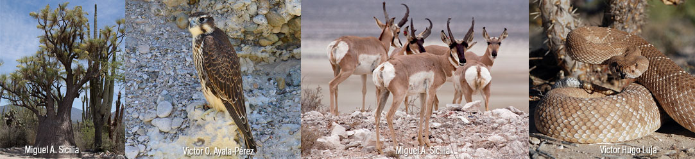
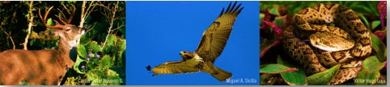
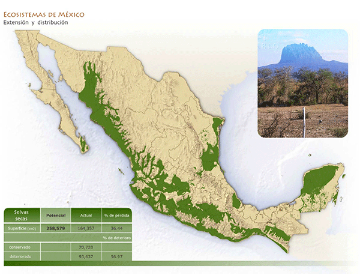
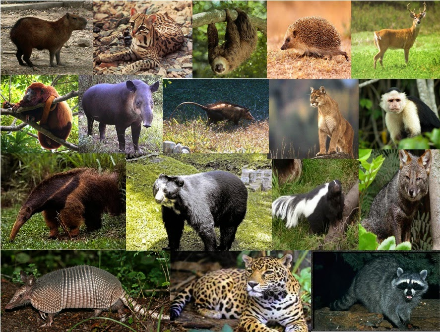
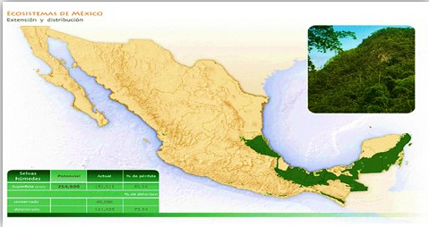
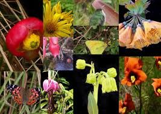
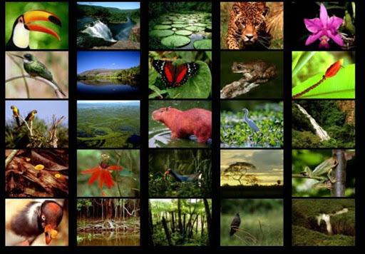

Flora |
|
|
|
En este tipo de ecosistema abundan familias y géneros muy adaptados a la sequía, como leguminosas, cactos, agaves, euforbiáceas, pastos, entre muchas otras. Entre los arbolillos pequeños con tallos gruesos están: izotes (Yucca periculosa, Y. filifera y otras) y palo verde (Parkinsonia microphylla), pata de elefante (Beaucarnea gracilis), torote (Bursera microphylla) y tenaza (Havardia pallens). En Baja California habitan también el cirio (Fouquieria columnaris), copalquín (Pachycormus discolor), palo fierro (Olneya tesota) y otras. Hay arbustos espinosos como el amargoso (Castela tortuosa), granjero (Celtis pallida), huizache (Acacia farnesiana), limoncillo (Zanthoxylum fagara), mezquite (Prosopis juliflora, P. laevigata), ocotillo (Fouquieria splendens), tullidora (Karwinskia humboldtiana), zarza (Mimosa leucaenoides) entre otros.
FAUNA

Aunque no lo parezca, en los matorrales habitan gran cantidad de mamíferos, algunos de los más vistosos son berrendo (Antilocapra americana), borrego cimarrón (Ovis canadensis), coyote (Canis latrans), gato montés (Lynx rufus), liebre cola negra (Lepus californicus), mapache (Procyon lotor), pecarí de collar (Pecari tajacu), puma (Puma concolor), tejón (Taxidea taxus), tigrillo (Leopardus wiedii), venado bura (Odocoileus hemionus), zorrita norteña (Vulpes macrotis) y varios murciélagos.
Bosque templado
Están presentes en las montañas del país, en zonas templadas de elevada altitud y a lo largo de todo el Eje Neo volcánico (Sierra Madre Oriental, Occidental y Sierra Madre del Sur.

Flora |
|
|
En los bosques templados hay una gran diversidad de árboles, aunque dominan las especies de pinos y encinos.
Algunos pinos comunes son Ocote blanco (Pinus montezumae), Ocote chino (Pinus oocarpa), Ocote pardo (Pinus hartwegii), Pino cedrón (Pinus pringlei), Acahuite(Pinus ayacahuite), Pino chimonque (Pinus leiophylla), Pino chino(Pinus teocote),Pino lacio (Pinus pseudostrobus), hortiguillo (Pinus lawsoni), Pino loco (Pinus cembroides) y Ocote colorado (Pinus patula). En algunas regiones crecen también el abeto (Abies religiosa), el Ayarín (Pseudotsuga menziesii) y varias especies de Táscate (Juniperus deppeana, J. flaccida, etc.), y los Pinabetes (Abies duranguensis, A. religiosa).
Los bosques templados son comunidades con un estrato bajo muy escaso. En algunos sitios se desarrollan pequeños manchones de matorrales compuestos por manzanita (Acrtostaphylos pungens), Arrayán (Gaultheria acuminata), Palo de rosa (Bejaria aestuans), Jara (Baccharis heterophylla), Tlaxistle (Amelanchier denticulata), Laurel (Litsea glaucescens.Las epífitas no son comunes pero algunas bromelias y orquídeas crecen en pinos o encinos sobre todo en sitios muy húmedos. Puede haber cientos de especies de hongos entre ellas el Hongo de borrego (Russula brevipes), Hongo de yema (Amanita caesarea), Matamoscas (Amanita muscaria), Hongo cemita (Boletus edulis) y Duraznillo (Cantharellus cibarius).
FAUNA

Habitan también Venado cola blanca (Odocoileus virginianus), Lince (Lynx rufus), Puma (Puma concolor), Armadillo (Dasypus novemcinctus), Tlacuache (Didelphis virginiana), Zorra gris (Urocyon cinereoargenteus), Mapache (Procyon lotor), Conejo serrano (Sylvilagus floridanus), Ardilla voladora (Glaucomys volans), Ardilla gris (Sciurus aureogaster) y Coatí norteño (Nasua narica).
Las Serpientes de cascabel (Crotalus basiliscus), Víbora cascabel cola negra (Crotalus molossus), Vibora cascabel transvolcánica (Crotalus triseriatus) se alimentan de pequeños mamíferos que abundan en estos bosques. Son el hábitat preferido del Clarín jilguero (Myadestes occidentalis) y el Azulejo garganta azul .
En bosques templados también habitan de gran variedad de insectos. En los bosques templados de oyamel del centro de México se encuentran los sitios de hibernación de la Mariposa monarca (Danaus plexippus). Algunas de las especies más sobresalientes de insectos son los escarabajos del género Plusiotis que habitan bosques húmedos, templados a fríos. En los ríos de las montañas habitan varios peces particulares de México como pintito de Tocumbo (Chapalichthys pardalis), Picote tequila (Zoogoneticus tequila), Picote (Zoogoneticus quitzeoensis), Tiro de Zacapu (Allotoca zacapuensis), Pintada (Xenotoca variata) y Chegua (Alloophorus robustus) entre varios otros de la familia de mexcalpinques (Godeidae), que son endémicos de México y se encuentran en peligro por la escases de sus poblaciones.
<Selvas secas
También conocidas como selva baja caducifolia, bosque tropical deciduo, selva baja decidua, selvas subhúmedas, aludiendo a sus características. Las selvas secas pueden ser medianas (entre 15 y 30 m), o bajas (menos de 15 m) y de acuerdo a la caída de sus hojas se consideran perennifolias (menos del 25% de las especies pierden sus hojas), subperennifolias (25 a 50% de las especies pierden las hojas), subcaducifolias (50 a 75% de las especies pierden las hojas) o caducifolias (más del 75% de las especies pierden sus hojas).

Flora |
|
|
|
Tienen comunidades vegetales dominadas por árboles pequeños que pierden sus hojas durante la época seca del año. Son propias de climas cálidos con lluvias escasas. Tienen una diversidad única con gran cantidad de especies endémicas. Se ubican en zonas muy frágiles y en condiciones climáticas que favorecen la desertificación.
En las selvas secas viven alrededor de 6,000 especies de plantas. Casi el 40% de sus especies son endémicas, es decir solamente se encuentran en estos ecosistemas y están adaptadas a la sequía. Entre las especies que la habitan hay una gran variedad de copales.
FAUNA

Algunos de los mamíferos que habitan estas selvas secas son brazo fuerte (Tamandúa mexicana), armadillo (Dasypus novemsinctus), mapache (Procyon lotor), comadreja (Mustela frenata), tejón (Nasua narica), sobresaliendo el venado cola blanca (Odocoileus virginianus), jaguarundi (Herpailerus yagouaroundi), ocelote (Leopardus pardalis), puma (Puma concolor), jaguar (Panthera onca), coyote (Canis latrans) y pecarí de collar (Tayassu tajacu). Entre las aves encontramos guacamaya verde (Ara militaris), varias cotorras y pericos, el trogón citrino (Trogon citreolus), cacique mexicano (Cacicus melanicterus), también cojolitas (Penelope purpurascens) y chachalaca pálida (Ortalis poliocephala). De los reptiles sobresalen la iguana verde (Iguana iguana) y la iguana negra (Ctenosaura pectinata), el lagarto de chaquira (Heloderma horridum), las tortugas casquito (Kinosternon integrum), culebras y víboras como la boa (Boa constrictor) y las coralillo (Micrurus spp.).
Selvas humedas
Son las comunidades vegetales más exuberantes del país, están formadas por árboles de hasta 30 m o más de alto, de muy diversas especies y que conservan su follaje todo el año. Además, abundan las lianas, epífitas y palmas. Algunos árboles tienen troncos rectos con raíces tubulares con contrafuertes. La mayoría de los árboles tienen hojas grandes y duras. Se distribuyen en climas cálidos y húmedos. Son ecosistemas muy complejos con alta variación de especies de un lugar a otro.
México cuenta con extensiones de esta vegetación en algunas zonas del sur del país, como Oaxaca, Veracruz, Chiapas, Tabasco, Campeche, Yucatán y Quintana Roo.

México cuenta con extensiones de esta vegetación en algunas zonas del sur del país, como Oaxaca, Veracruz, Chiapas, Tabasco, Campeche, Yucatán y Quintana Roo.
Flora

La mayoría de las plantas y árboles de la selva húmeda mantienen sus hojas durante todo el año. En selvas húmedas como la selva mexicana, se pueden encontrar árboles como: la caoba, la ceiba, el cedro rojo.
Por debajo de esta amplia vegetación crecen orquídeas, helechos, musgos, líquenes, lianas y bromelias. También hay árboles de menor altura como el cacao, la rosita de cacao, la guanábana, el palo de hule y el corcho.
FAUNA
Los más comunes son las aves de rapiña como el halcón gris, el águila arpía, la lechuza y el búho.
Todas ellas son carnívoras y bajan continuamente para cazar su alimento.
